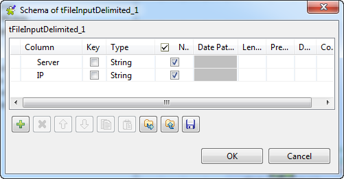
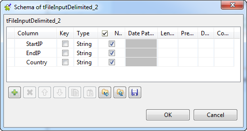

|
Component family |
Data Quality | |
|
Function |
tIntervalMatch receives a main flow and aggregates it based on join to a lookup flow. Then it matches a specified value to a range of values and returns related information. | |
|
Purpose |
Helps to return a value based on a Join relation. | |
|
Basic settings |
Schema and Edit schema |
A schema is a row description, i.e., it defines the number of fields that will be processed and passed on to the next component. The schema is either built-in or remote in the Repository. If you are using Talend Open Studio for Big Data, only the Built-in mode is available. Click Edit Schema to make changes to the schema. Note that if you make changes, the schema automatically becomes built-in. |
|
|
|
Built-in: The schema will be created and stored locally for this component only. Related topic: see Talend Open Studio User Guide. |
|
|
|
Repository: The schema already exists and is stored in the Repository, hence can be reused in various projects and job flowcharts. Related topic: see Talend Open Studio User Guide. |
|
Search Column |
Select the main flow column containing the values to be matched with a range of values | |
|
|
Column (LOOKUP) |
Select the lookup flow column containing the values to be returned when the Join is ok. |
|
|
Lookup Column (min) / Include the bound (min) |
Select the column containing the minimum value of the range. Select the check box to include the minimum value of the range in the match. |
|
|
Lookup Column (max) / Include the bound (max) |
Select the column containing the maximum value of the range. Select the check box to include the maximum value of the range in the match. |
|
Advanced settings |
tStatCatcher Statistics |
Select this check box to collect log data at the component level. |
|
Usage |
This component handles flow of data therefore it requires input and output, hence is defined as an intermediary step. | |
|
Limitation |
n/a | |
This scenario describes a four-component Job that checks the server IP addresses listed in the main input file against a list of IP ranges given in a lookup file to identify the hosting country for each server.

The Job requires two tFileInputDelimited components, a tIntervalMatch component and a tLogRow component.
Drop the components onto the design workspace.
Connect the components using Row > Main connection.
Note that the connection from the second tFileInputDelimited component to the tIntervalMatch component will appear as a Lookup connection.
Double-click the first tFileInputDelimited component to open its Basic settings view.

Browse to the file to be used as the main input, which provides a list of servers and their IP addresses:
Server;IP Server1;057.010.010.010 Server2;001.010.010.100 Server3;057.030.030.030 Server4;053.010.010.100
Click the [...] button next to Edit schema to open the [Schema] dialog box and define the input schema. According to the input file structure, the schema is made of two columns, respectively Server and IP, both of type String. Then click OK to close the dialog box.
Define the number of header rows to be skipped, and keep the other settings as they are.
Define the properties of the second tFileInputDelimited component similarly.

The file to be used as the input to the lookup flow in this example lists some IP address ranges and the corresponding countries:
StartIP;EndIP;Country 001.000.000.000;001.255.255.255;USA 002.006.190.056;002.006.190.063;UK 011.000.000.000;011.255.255.255;USA 057.000.000.000;057.255.255.255;France 012.063.178.060;012.063.178.063;Canada 053.000.000.000;053.255.255.255;Germany
Accordingly, the schema of the lookup flow should have the following structure:
Double-click the tIntervalMatch component to open its Basic settings view.

From the Search Column list, select the main flow column containing the values to be matched with the range values. In this example, we want to match the servers' IP addresses with the range values from the lookup flow.
From the Column (LOOKUP) list, select the lookup column that holds the values to be returned. In this example, we want to get the names of countries where the servers are hosted.
Set the min and max lookup columns corresponding to the range bounds defined in the lookup schema, StartIP and EndIP respectively in this example.